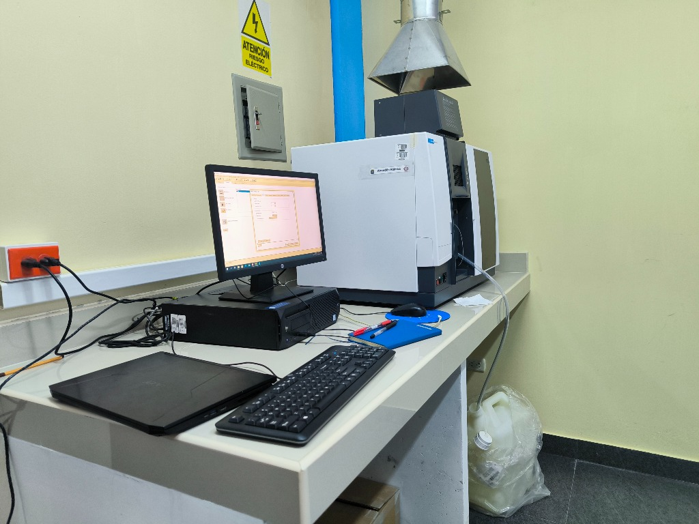

La Espectrometría de Absorción Atómica (AAS) es un método robusto y de comprobada eficacia para cuantificar metales a niveles de traza y ultra traza en diversas matrices geológicas y ambientales.
Aplicaciones comunes: Análisis de oro, plata y metales base en muestras minerales, así como control de calidad en aguas. El sistema Agilent AA240 ofrece una óptica rápida e instrumentación confiable que minimiza las interferencias químicas.
(Aquí puedes agregar la información técnica detallada: digestión ácida, tipos de flama, límites de detección, normativas, etc.)